Немного о древних монетах

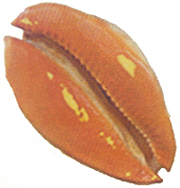
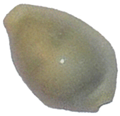
Раковины тропических морей каури - самые древние монеты многих стран мира. Имеют много разновидностей, отличающихся размерами и цветами окраски. Использовались в торговле в странах Азии, Океании, Африки, Америки. В Китае каури вошли в обиход 3500 лет назад. Их название, переведенное в иероглиф, вошло во многие китайские слова, связанные с торговлей и денежным обращением.
Еще в середине XIX века на рынках Уганды каури принимались в оплату покупок. Корова, к примеру, стоила 2500 каури, слоновый бивень весом 30 кг - 1000, курица - 25 каури.
Одна из разновидностей моллюсков носит символическое название - «Cyprea moneta». Окрашена в цвета от белого до золотистого.
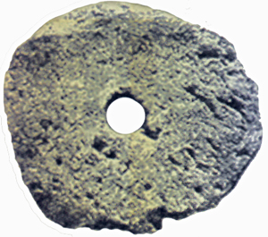
Каменные деньги острова Яп, входящего в состав Каролинского архипелага. Имели вид жерновов с отверстием в центре. Достоинство «монеты», с одной стороны, определял ее размер, иногда достигавший до 3-4 м в диаметре, а с другой - красота выбранного для изделия камня.
На местном наречии каменные монеты-диски именуются «рай». Основным материалом для их изготовления были арагонит и кальцит, которые добывали на острове Палау и доставляли на Яп морем.
Каменные деньги владельцы хранили снаружи ограды своего жилья. Это демонстрировало богатство и состоятельность хозяина. «Рай» использовались до начала XX века. В 1929 г. на острове была учтена 13 281 каменная монета. Эта цифра превышало все местное население.
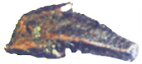
Ольвия. Серебро. Монета в виде большого дельфина. VI - V вв. до н.э.
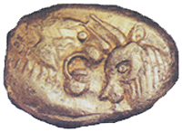
Лидия. Монета времен царя Креза с изображениями льва и быка (560-546 гг. до н. э.). Размер в натуре 1,53x1,18 см
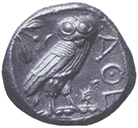
Афины. Тетрадрахма. V в. до н.э.
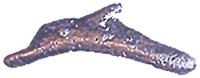
Ольвия. Серебро. Монета в виде маленького дельфина. IV в. до н. э.
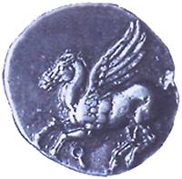
Монета с Пегасом. Не позже 300 г. до н. э.
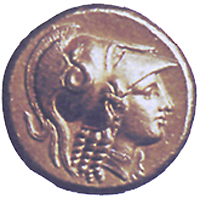
Греция. Монета с изображением Александра Македонского (около 323 г. до н. э.)
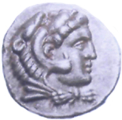
Греция. Тетрадрахма. Александр Македонский. 336-323 гг. до н. э. Шлем, в котором изображен Александр, стал причиной, по которой в мусульманских странах тот получил прозвище «Искандер Зулькарнайн» - «Александр Двурогий»
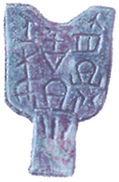
Китай. Монета-мотыга. Бронза. Между 470 и 221 гг. до н.э.
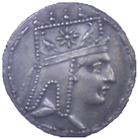
Древняя Армения. Дихалк или тетрадрам. Тигран П. Серебро. Примерно 96-56 гг. до н. э.
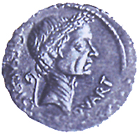
Рим. Монета с изображением Юлия Цезаря (I в. до н. э.)
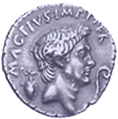
Рим. Денарий. Секст Помпеи. 42-40 гг. до н.э.
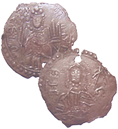
Киевское княжество. Князь Владимир Великий. Сребряник: лицевая и оборотная сторона.
Античные монеты
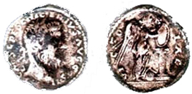
Рим.Песциний Нигер. Денарий. AR. II в. н.э
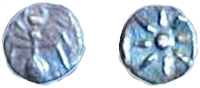
Пантикапей. Тетартеморий. AR. V в. до н.э.
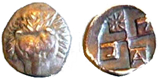
Пантикапей. Диобол. AR. V в. до н.э.
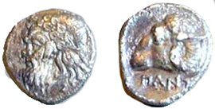
Пантикапей. Диобол. AR. IV в. до н.э.
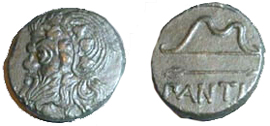
Пантикапей. Обол. AЕ. IV в. до н.э.
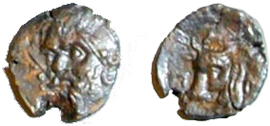
Пантикапей. Дихалк. AЕ. III в. до н.э. Редкая.
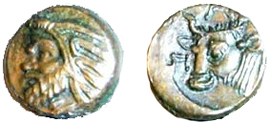
Пантикапей. Лепта. AЕ. III в. до н.э.
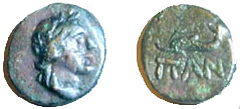
Пантикапей. Дихалк. AЕ. III в. до н.э.
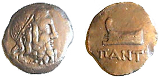
Пантикапей. Обол. AЕ. III в. до н.э.
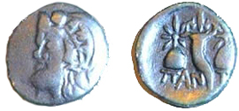
Пантикапей. Тетрахалк. AЕ. II в. до н.э.
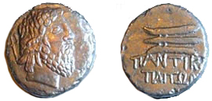
Пантикапей. Обол. AЕ. II в. до н.э.
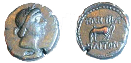
Пантикапей. Тетрахалк. AЕ. I в. до н.э.
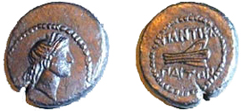
Пантикапей. Тетрахалк. AЕ. I в. до н.э.
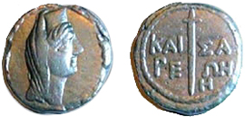
Кесария (Пантикапей). 8 унций. AЕ. I в. н.э.
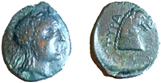
Тира. АЕ. IV в. до н.э.
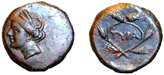
Тира. АЕ. III в. до н.э.
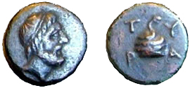
Тира. АЕ. II в. до н.э.
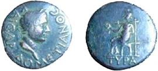
Тира. Домициан. Тетрассарий. АЕ. I в. н.э.
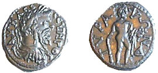
Тира. Септимий Север. Тетрассарий. АЕ. III в.н.э.

Тира. Юлия Домна. Тетрассарий. АЕ. III в. н.э.
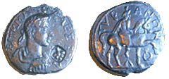
Тира. Александр Север. Тетрассарий. АЕ. III в. н.э.
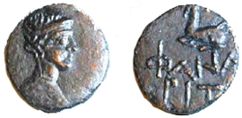
Фанагория. Тетрахалк. АЕ. II в. до н.э.
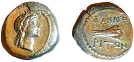
Фанагория. Тетрахалк. АЕ. I в. до н.э.
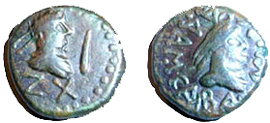
Боспор. Радамсад. Статер. АЕ. IV в.
По материалам сайта : http://coinplanet.ru/